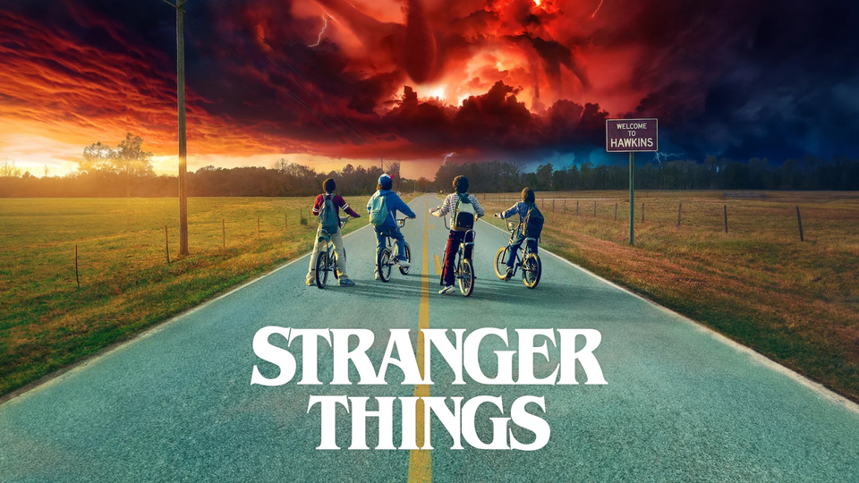

Onde o mundo está ao contrário...
Visão Geral da Série
Criada pelos Irmãos Duffer, a série passa-se na década de 1980 na cidade fictícia de Hawkins, Indiana, onde o desaparecimento de um rapaz desencadeia uma série de eventos misteriosos.
A combinação nostálgica da cultura dos anos 80 com elementos de ficção científica e terror tornou Stranger Things num dos maiores fenómenos globais da Netflix.

Elementos Principais da História
- A existência do "Mundo Invertido" (Upside Down), uma dimensão paralela sombria.
- As capacidades telecinéticas e o passado de cobaia da personagem Eleven.
- A forte amizade e determinação do grupo de crianças para proteger a sua cidade.
Para saberes mais sobre o elenco e episódios, visita a página oficial na Netflix.